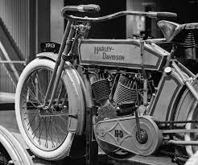
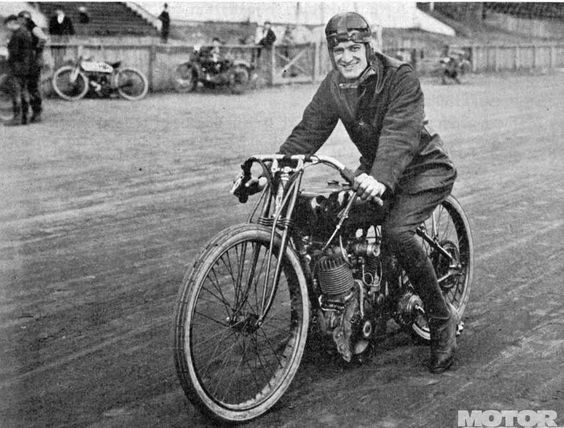

A Harley-Davidson é uma empresa americana fundada em 1903, em Milwaukee, Wisconsin, pelos amigos William S. Harley e Arthur Davidson. A empresa inicialmente produzia motocicletas de corrida, mas logo mudou seu foco para produzir motocicletas para uso diário. Ao longo das décadas, a Harley-Davidson se tornou uma das marcas mais icônicas do mundo, sinônimo de liberdade, aventura e rebeldia.

Os fundadores da Harley-Davidson foram William S. Harley e Arthur Davidson. Harley nasceu em 1876 em Milwaukee, Wisconsin, e estudou engenharia na Universidade de Wisconsin-Madison. Enquanto trabalhava em um motor de combustão interna como projeto de graduação, Harley teve a ideia de criar uma motocicleta. Davidson nasceu em 1881 em Milwaukee, Wisconsin, e cresceu em uma família de fabricantes de bicicletas. Davidson e seus irmãos eram apaixonados por mecânica e começaram a trabalhar em motores de combustão interna. Em 1901, Davidson se juntou a Harley para construir uma motocicleta e, no ano seguinte, eles fundaram a Harley-Davidson. Os primeiros anos da empresa foram dedicados à produção de motocicletas de corrida, e em 1908 eles começaram a produzir motocicletas para uso diário. Durante a Primeira Guerra Mundial, a Harley-Davidson forneceu motocicletas para o exército americano e, depois da guerra, a empresa se concentrou na produção de motocicletas para uso civil.
O Museu da Harley-Davidson, localizado em Milwaukee, Wisconsin, é um lugar onde os visitantes podem explorar a história da empresa e ver algumas das motocicletas mais icônicas já produzidas pela Harley-Davidson. O museu foi inaugurado em 2008 e apresenta uma ampla variedade de exposições interativas, artefatos históricos, fotografias, vídeos e muito mais. Os visitantes podem ver de perto motocicletas antigas, desde os primeiros modelos da empresa até motocicletas que foram usadas por celebridades e personalidades históricas, como Elvis Presley e o presidente dos EUA, Ronald Reagan. Além das motocicletas, o museu também apresenta exposições sobre a cultura da motocicleta, incluindo roupas e acessórios de pilotagem, música e arte. O museu é considerado um destino imperdível para os fãs da Harley-Davidson e para todos os interessados na história da indústria de motocicletas. Ele oferece visitas guiadas, palestras e eventos especiais ao longo do ano, além de uma loja de presentes onde os visitantes podem comprar lembranças exclusivas da Harley-Davidson.